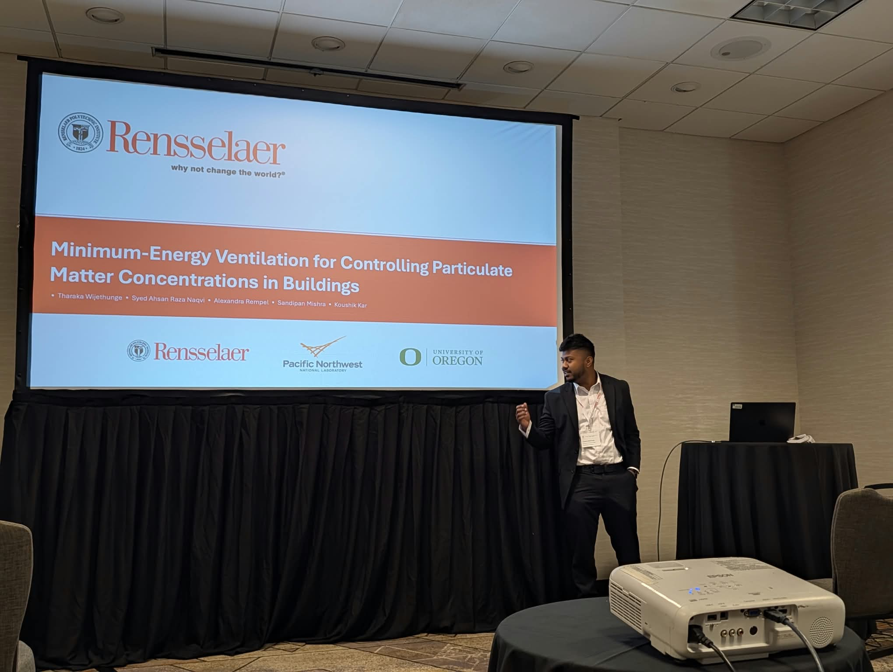

Minimum-Energy Ventilation for Controlling Particulate Matter Concentrations in Buildings
Ventilation can reduce indoor particulate matter, but it also affects a building's energy use. This work develops ventilation and control strategies that maintain indoor air-quality limits while minimizing the energy required.
Presented at the Modeling, Estimation and Control Conference (MECC), this paper is part of my research on energy-efficient control of building systems, including indoor air quality and thermal dynamics.
